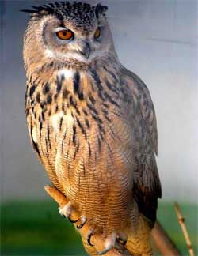

Лисиця
Лисиці можуть чути звук миші під товстим шаром снігу.
Ласкаво просимо! Тут ти знайдеш цікаві факти про дивовижних тварин з усього світу.
Лисиці можуть чути звук миші під товстим шаром снігу.
Панди більшу частину дня їдять бамбук — до 12 годин щодня.

Сови можуть повертати голову майже на 270 градусів.